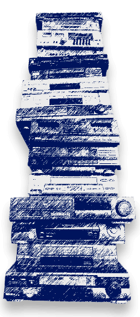

<!-- about-section*****************************************************begin -->
<section class="section about-section dark">
  <div class="wrapper">
    <div class="about-wrapper">
      <div class="wrap-img">
        
        <span class="top-line"></span>
        <span class="bottom-line"></span>
      </div>
      <div class="wrap-desc">
        <h2 class="title light">О компании</h2>
        <p>Компания по утилизации Группа компаний «Капитал» действует в Северо-западном федеральном округе более 5 лет.
          Мы
          отлично зарекомендовали себя на рынке, пользуемся доверием у многочисленных заказчиков и деловых партнеров,
          уважением среди конкурентов. Наша фирма оказывает услуги по утилизации оргтехники, электронного оборудования,
          автотранспортных средств, бытовой техники, громоздкого промышленного оборудования, а также люминесцентных
          ламп.
        </p>

        <p>Современные жесткие требования экологического надзора ставят перед организациями и предприятиями высокую
          планку
          условий соблюдения всевозможных нормативных актов и постановлений, связанных с утилизацией оргтехники,
          электронного оборудования, а также различных приборов с содержанием опасных веществ. Активно действующим
          организациям, тем более небольшим частным предприятиям, решить эти задачи собственными силами практически
          невозможно.</p>

        <p>Для решения подобных проблем на рынке действуют специализированные утилизационные компании, которые берут на
          себя все хлопоты, связанные с утилизацией электронной оргтехники, а также со сбором, накоплением, хранением,
          транспортировкой и переработкой приборов, содержащих опасные вещества.</p>
      </div>
    </div>
  </div>
</section>
<!-- about-section*****************************************************end -->